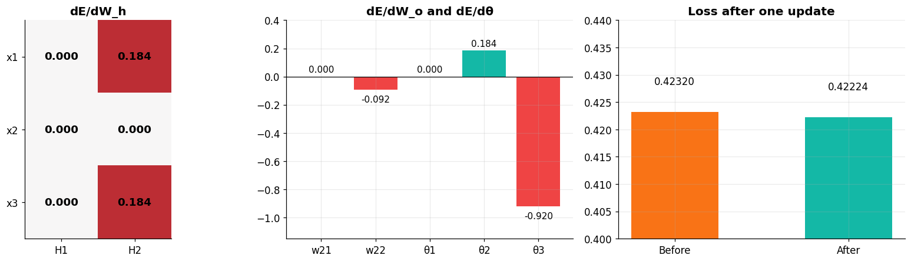
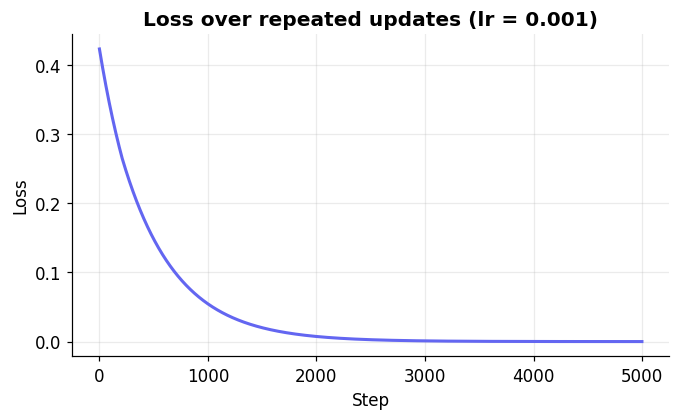

Name: Edrian C. Jugan
Task 3:Forward amd Backward Propagation#
📌 Problem Statement#
Instruction: Perform a forward and backward propagation in python using the inputs from Laboratory Task 2.
x = np.array([1, 0, 1])
y = np.array([1])
# use relu as the activation function.
# learning rate
lr = 0.001
We reuse the same network as Task 2 (3 inputs → 2 hidden units → 1 output) with ReLU as the activation and learning rate \(\alpha = 0.001\).
🧠 The Math#
We use the loss \(E = \tfrac{1}{2}(\hat{y}-y)^2\), so \(\dfrac{\partial E}{\partial \hat{y}} = \hat{y}-y\). The ReLU derivative is \(f'(Z)=1\) if \(Z>0\), else \(0\).
Step |
Formula |
|---|---|
Forward |
\(Z_h = xW_h + b_h,\quad A_h=f(Z_h),\quad Z_o = A_hW_o + \theta_3,\quad \hat{y}=f(Z_o)\) |
Output error |
\(\delta_o = (\hat{y}-y)\cdot f'(Z_o)\) |
Hidden error |
\(\delta_h = (\delta_o W_o^{T})\odot f'(Z_h)\) |
Gradients |
\(\dfrac{\partial E}{\partial W_o}=A_h^{T}\delta_o,\quad \dfrac{\partial E}{\partial W_h}=x^{T}\delta_h,\quad \dfrac{\partial E}{\partial \theta}=\delta\) |
Update |
\(W \leftarrow W - \alpha\,\dfrac{\partial E}{\partial W}\) |
import numpy as np
import matplotlib.pyplot as plt
# consistent look for every plot in this notebook
plt.rcParams.update({
"figure.dpi": 110, "axes.grid": True, "grid.alpha": 0.25,
"axes.spines.top": False, "axes.spines.right": False,
"axes.titleweight": "bold", "font.size": 11,
})
TEAL, INDIGO, RED, ORANGE, GREY = "#14b8a6", "#6366f1", "#ef4444", "#f97316", "#94a3b8"
🔧 Setup#
x = np.array([1, 0, 1])
y = np.array([1])
# use relu as the activation function.
def relu(z):
return np.maximum(0, z)
def relu_derivative(z):
return (z > 0).astype(float)
# learning rate
lr = 0.001
# parameters from Laboratory Task 2
W_h = np.array([[ 0.2, -0.3],
[ 0.4, 0.1],
[-0.5, 0.2]]) # (3 inputs x 2 hidden units)
W_o = np.array([[-0.3],
[-0.2]]) # (2 hidden units x 1 output)
theta = np.array([-0.4, 0.2, 0.1]) # theta1, theta2 (hidden) | theta3 (output)
➡️ Forward Propagation#
Same computation as Task 2, but we keep every \(Z\) and activation because the backward pass needs them.
def forward(x, W_h, W_o, theta):
Z_h = x @ W_h + theta[:2] # weighted sums, hidden layer
A_h = relu(Z_h) # hidden activations (H1, H2)
Z_o = A_h @ W_o + theta[2] # weighted sum, output layer (Z3)
y_hat = relu(Z_o) # prediction
return Z_h, A_h, Z_o, y_hat
Z_h, A_h, Z_o, y_hat = forward(x, W_h, W_o, theta)
loss = 0.5 * np.sum((y_hat - y) ** 2)
print("Z_h =", np.round(Z_h, 4))
print("A_h =", np.round(A_h, 4))
print("Z_o =", np.round(Z_o, 4))
print("y_hat =", np.round(y_hat, 4))
print("loss =", round(loss, 4))
Z_h = [-0.7 0.1]
A_h = [0. 0.1]
Z_o = [0.08]
y_hat = [0.08]
loss = 0.4232
⬅️ Backward Propagation#
Hand calculation
Output error: \(\delta_o = (0.08-1)\cdot f'(0.08) = -0.92 \cdot 1 = \mathbf{-0.92}\)
Hidden error: \(\delta_h = [\,-0.92(-0.3),\; -0.92(-0.2)\,]\odot[\,f'(-0.7),\, f'(0.1)\,] = [\,0.276,\; 0.184\,]\odot[\,0,\,1\,] = \mathbf{[0,\; 0.184]}\)
Gradients:
\(\partial E/\partial W_o = A_h^T\delta_o = [0,\;0.1]^T(-0.92) = [\,0,\;-0.092\,]^T\)
\(\partial E/\partial W_h = x^T\delta_h\), which is \(0.184\) for \(w_{12}\) and \(w_{16}\) and \(0\) for everything else (because \(x_2=0\) and \(H_1\) was dead)
\(\partial E/\partial\theta = [\,0,\;0.184,\;-0.92\,]\)
Now the same thing in code:
# 1. output layer error
delta_o = (y_hat - y) * relu_derivative(Z_o) # shape (1,)
# 2. hidden layer error
delta_h = (delta_o @ W_o.T) * relu_derivative(Z_h) # shape (2,)
# 3. gradients
dW_o = np.outer(A_h, delta_o) + 0.0 # (2 x 1) (+0.0 avoids printing -0.)
dW_h = np.outer(x, delta_h) # (3 x 2)
dtheta = np.concatenate([delta_h, delta_o]) # theta1, theta2, theta3
print("delta_o =", np.round(delta_o, 4))
print("delta_h =", np.round(delta_h, 4))
print("\ndE/dW_o =\n", np.round(dW_o, 4))
print("\ndE/dW_h =\n", np.round(dW_h, 4))
print("\ndE/dtheta =", np.round(dtheta, 4))
delta_o = [-0.92]
delta_h = [0. 0.184]
dE/dW_o =
[[ 0. ]
[-0.092]]
dE/dW_h =
[[0. 0.184]
[0. 0. ]
[0. 0.184]]
dE/dtheta = [ 0. 0.184 -0.92 ]
💡 \(H_1\) was \(0\) (its \(Z_1\) was negative), so the whole first hidden unit gets a gradient of \(0\): \(w_{11}, w_{13}, w_{15}, \theta_1\) and \(w_{21}\) do not change in this step.
🔄 Update the parameters#
\(W_{new} = W - \alpha \cdot \partial E/\partial W\) with \(\alpha = 0.001\).
W_o_new = W_o - lr * dW_o
W_h_new = W_h - lr * dW_h
theta_new = theta - lr * dtheta
print("Updated hidden weights (w11 w12 / w13 w14 / w15 w16):\n", np.round(W_h_new, 6))
print("\nUpdated output weights (w21 / w22):\n", np.round(W_o_new, 6))
print("\nUpdated biases (theta1, theta2, theta3):", np.round(theta_new, 6))
Updated hidden weights (w11 w12 / w13 w14 / w15 w16):
[[ 0.2 -0.300184]
[ 0.4 0.1 ]
[-0.5 0.199816]]
Updated output weights (w21 / w22):
[[-0.3 ]
[-0.199908]]
Updated biases (theta1, theta2, theta3): [-0.4 0.199816 0.10092 ]
📈 Did the update help?#
Run the forward pass again with the new parameters. The loss should go down.
_, A_h_new, Z_o_new, y_hat_new = forward(x, W_h_new, W_o_new, theta_new)
loss_new = 0.5 * np.sum((y_hat_new - y) ** 2)
print(f"Before update -> y_hat = {y_hat[0]:.6f} | error = {(y_hat - y)[0]:.6f} | loss = {loss:.6f}")
print(f"After update -> y_hat = {y_hat_new[0]:.6f} | error = {(y_hat_new - y)[0]:.6f} | loss = {loss_new:.6f}")
Before update -> y_hat = 0.080000 | error = -0.920000 | loss = 0.423200
After update -> y_hat = 0.081040 | error = -0.918960 | loss = 0.422244
🎨 Gradients and loss at a glance#
fig, axes = plt.subplots(1, 3, figsize=(15, 4.2))
# (1) heatmap of dE/dW_h
im = axes[0].imshow(dW_h, cmap="RdBu_r", vmin=-0.25, vmax=0.25)
axes[0].grid(False)
for i in range(3):
for j in range(2):
axes[0].text(j, i, f"{dW_h[i, j]:.3f}", ha="center", va="center", fontsize=12, fontweight="bold")
axes[0].set_xticks([0, 1], ["H1", "H2"]); axes[0].set_yticks([0, 1, 2], ["x1", "x2", "x3"])
axes[0].set_title("dE/dW_h")
# (2) other gradients
labels = ["w21", "w22", "θ1", "θ2", "θ3"]
vals = [dW_o[0, 0], dW_o[1, 0], *dtheta]
axes[1].bar(labels, vals, color=[TEAL if v >= 0 else RED for v in vals])
axes[1].axhline(0, color="black", lw=.8)
for i, v in enumerate(vals):
axes[1].text(i, v + (0.03 if v >= 0 else -0.09), f"{v:.3f}", ha="center", fontsize=10)
axes[1].set_ylim(-1.15, 0.4)
axes[1].set_title("dE/dW_o and dE/dθ")
# (3) loss before and after
axes[2].bar(["Before", "After"], [loss, loss_new], color=[ORANGE, TEAL], width=.5)
for i, v in enumerate([loss, loss_new]):
axes[2].text(i, v + 0.005, f"{v:.5f}", ha="center", fontsize=11)
axes[2].set_ylim(0.40, 0.44)
axes[2].set_title("Loss after one update")
plt.tight_layout()
plt.show()

🔍 Check: numerical gradient#
To prove the backprop formulas are right, we nudge each parameter by a tiny amount and measure how the loss changes (central difference). It should match our gradients.
def loss_fn():
_, _, _, yh = forward(x, W_h, W_o, theta)
return 0.5 * np.sum((yh - y) ** 2)
def numerical_grad(param, eps=1e-6):
grad = np.zeros_like(param)
for idx in np.ndindex(*param.shape):
old = param[idx]
param[idx] = old + eps; plus = loss_fn()
param[idx] = old - eps; minus = loss_fn()
param[idx] = old
grad[idx] = (plus - minus) / (2 * eps)
return grad
print("dW_h matches numerical gradient: ", np.allclose(dW_h, numerical_grad(W_h), atol=1e-6))
print("dW_o matches numerical gradient: ", np.allclose(dW_o, numerical_grad(W_o), atol=1e-6))
print("dtheta matches numerical gradient: ", np.allclose(dtheta, numerical_grad(theta), atol=1e-6))
dW_h matches numerical gradient: True
dW_o matches numerical gradient: True
dtheta matches numerical gradient: True
🚀 Bonus: what if we keep repeating the step?#
One step barely moves the loss because \(\alpha = 0.001\) is small. Here we repeat the same forward and backward step many times to see the loss go down.
def train(steps, lr):
Wh, Wo, th = W_h.copy(), W_o.copy(), theta.copy()
history = []
for _ in range(steps):
Zh, Ah, Zo, yh = forward(x, Wh, Wo, th)
history.append(0.5 * np.sum((yh - y) ** 2))
d_o = (yh - y) * relu_derivative(Zo)
d_h = (d_o @ Wo.T) * relu_derivative(Zh)
Wo -= lr * np.outer(Ah, d_o)
Wh -= lr * np.outer(x, d_h)
th -= lr * np.concatenate([d_h, d_o])
return history, yh
history, y_final = train(5000, lr)
print(f"Loss at step 1 : {history[0]:.6f}")
print(f"Loss at step 5000 : {history[-1]:.6f}")
print(f"Prediction after 5000 steps: {y_final[0]:.4f} (target = 1)")
plt.figure(figsize=(7, 3.8))
plt.plot(history, color=INDIGO, lw=2)
plt.xlabel("Step"); plt.ylabel("Loss"); plt.title("Loss over repeated updates (lr = 0.001)")
plt.show()
Loss at step 1 : 0.423200
Loss at step 5000 : 0.000018
Prediction after 5000 steps: 0.9940 (target = 1)

✅ Final Answer#
Forward pass: \(Z_h=[-0.7,\;0.1]\), \(A_h=[0,\;0.1]\), \(Z_3=0.08\), \(\hat{y}=\mathbf{0.08}\), error \(=\mathbf{-0.92}\)
Backward pass
Quantity |
Value |
|---|---|
\(\delta_o\) |
\(-0.92\) |
\(\delta_h\) |
\([\,0,\;0.184\,]\) |
\(\partial E/\partial w_{21},\,\partial E/\partial w_{22}\) |
\(0,\;-0.092\) |
\(\partial E/\partial w_{12},\,\partial E/\partial w_{16}\) |
\(0.184,\;0.184\) |
\(\partial E/\partial w_{11},\,w_{13},\,w_{14},\,w_{15}\) |
\(0\) |
\(\partial E/\partial \theta_1,\,\theta_2,\,\theta_3\) |
\(0,\;0.184,\;-0.92\) |
Updated parameters (\(\alpha = 0.001\))
Parameter |
Old |
New |
|---|---|---|
\(w_{12}\) |
\(-0.3\) |
\(-0.300184\) |
\(w_{16}\) |
\(0.2\) |
\(0.199816\) |
\(w_{22}\) |
\(-0.2\) |
\(-0.199908\) |
\(\theta_2\) |
\(0.2\) |
\(0.199816\) |
\(\theta_3\) |
\(0.1\) |
\(0.10092\) |
all other weights and \(\theta_1\) |
unchanged |
unchanged |
After the update, \(\hat{y}\) moves from \(0.08\) to about \(0.0810\) and the loss drops from \(0.4232\) to about \(0.4222\).